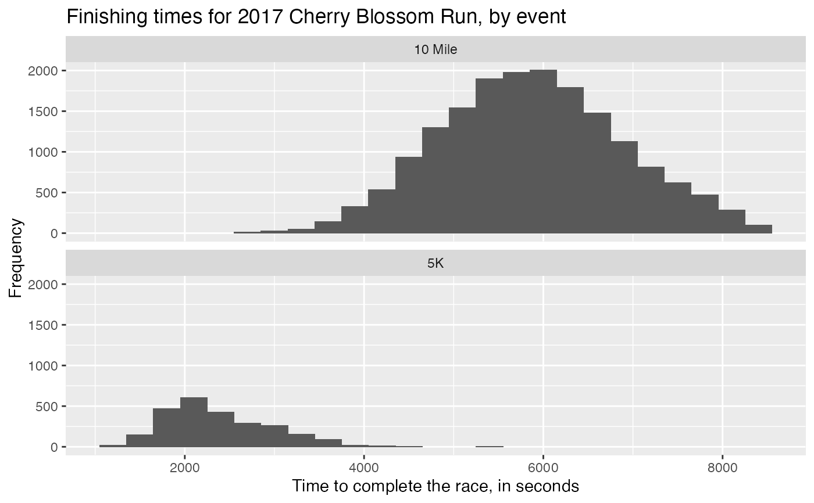

Details for all 19,961 runners in the 2017 Cherry Blossom Run, which is an annual road race that takes place in Washington, DC. Most runners participate in a 10-mile run while a smaller fraction take part in a 5k run or walk.
Format
A data frame with 19,961 observations on the following 9 variables.
- bib
Number on the runner's bib.
- name
Name of the runner, with only the initial of their last name.
- sex
Gender of the runner.
- age
Age of the runner.
- city
Home city of the runner.
- net_sec
Time to complete the race, after accounting for the staggered starting time, in seconds.
- clock_sec
Time to complete the race, ignoring the staggered starting time, in seconds.
- pace_sec
Average time per mile, in seconds.
- event
The event the racer participated in, either the
"10 Mile"race or the"5K".
Details
There was a time limit where all 10 Mile racers had to finish by. Can you figure out what that time is?
Examples
library(ggplot2)
# Finishing times
ggplot(run17, aes(x = net_sec)) +
geom_histogram(binwidth = 300) +
facet_wrap(~event, nrow = 2) +
labs(
title = "Finishing times for 2017 Cherry Blossom Run, by event",
subititle = "After accounting for the staggered starting time",
x = "Time to complete the race, in seconds",
y = "Frequency"
)
#> Warning: Removed 3 rows containing non-finite values (stat_bin).

# Pacing
ggplot(run17, aes(x = pace_sec)) +
geom_histogram(binwidth = 100) +
facet_wrap(~event, nrow = 2, scales = "free_y") +
labs(
title = "Pacing for 2017 Cherry Blossom Run, by event",
x = "Average time per mile, in seconds",
y = "Frequency"
)
#> Warning: Removed 3 rows containing non-finite values (stat_bin).